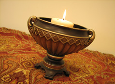

|
|
Unitarian Universalists do not all share the same beliefs. You can be a UU and also be a humanist, agnostic, Buddhist, Christian, atheist, pagan - you name it. What unites us is not that we all believe the same thing - it's that we share the same values, sense of community, and strong commitment to social justice. If you'd like to learn more about the basics of Unitarian Universalism, click on the link below for a detailed but easy-to-understand FAQ, "100 Questions Non-Members Ask About Unitarian Universalism." Disclaimer: Once you read all about UU, you might discover that you are a UU and didn't even know it! 100 Questions Non-Members Ask About Unitarian Universalism 
The Unitarian Universalist Association's Seven Principles express the values that we all share at Harmony. If you are familiar with UU, you might notice that our version of the Seven Principles is a bit different from the official UUA version. We created a short and sweet version that's easy for even our youngest children to memorize and internalize... so at Harmony, you'll hear "caring for planet Earth" as the seventh principle, rather than "the interdependent web of existence of which we are all a part." The Seven Principles are alive and well at Harmony - we affirm them together at the start of every service and our children's religious exploration program uses them extensively. At Harmony we believe:
The flaming chalice is the main symbol of the Unitarian Universalist faith. Each Harmony service begins when one of our Associate Members (kids ages 8-14) lights the chalice. Fittingly, the chalice symbol has its origins in social justice work. During World War II, Austrian refugee Hans Deutsch designed a logo for the Unitarian Service Committee as an underground symbol for assistance for Unitarians, Jews, and others trying to escape persecution by the Nazis. After the war, the chalice symbol was adopted by American Unitarians (and Universalists) and now there are flaming chalices on every UU altar. If you visit Harmony and look closely at people's jewelry, you'll also see many different versions of the flaming chalice adorning our members - if you want to show your UU pride too, click here for a great place to buy chalice jewelry at very reasonable prices. Unitarian Universalism is a liberal religious tradition that was formed from the merger of two different religions: Unitarianism and Universalism. Both began in Europe hundreds of years ago. In America, the Universalist Church of America was founded in 1793, and the American Unitarian Association in 1825. In 1961, these denominations merged to form a new religion, Unitarian Universalism through the Unitarian Universalist Association (UUA). Both religions have long histories and have contributed important theological concepts that remain central to Unitarian Universalism. Originally, all Unitarians were Christians who didn't believe in the Holy Trinity of God (Father, Son, and Holy Ghost), but in the unity, or single aspect, of God. Later, Unitarian beliefs stressed the importance of rational thinking, a direct relationship with God, and the humanity of Jesus. Universalism emerged as a Christian denomination with a central belief in universal salvation; that is, that all people will eventually be reconciled with God. Since the merger of the two denominations in 1961, Unitarian Universalism has nurtured its Unitarian and Universalist heritages to provide a strong voice for social justice and liberal religion. *UU history has been provided by the Unitarian Universalist Association of Congregations. For more information, visit www.uua.org. |

Even if YOU don't know what faith you are, Belief-O-Matic™ knows. Answer 20 questions about your concept of God, the afterlife, human nature, and more, and Belief-O-Matic™ will tell you what religion (if any) you practice...or ought to consider practicing. |